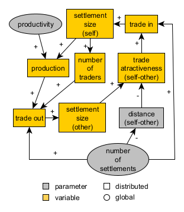

# 20 Implementing complex agents --- ## 20.1 Second-tier model: Pond Trade with cultural evolution  --- ## 20.1 Second-tier model: Pond Trade with cultural evolution <img src="https://media.springernature.com/full/springer-static/image/art%3A10.1038%2Fs41598-017-02040-4/MediaObjects/41598_2017_2040_Fig1_HTML.jpg?as=webp" alt=""> <small>Battiston et al. 2017, Fig. 1. Social influence is inherently layered. </small> --- ## 20.2 Implementing Cultural transmission 🤔 Before looking at the solution, try to write the code yourself: - a cultural "vector" of settlements, representing a series of cultural traits of the aggregated population of the settlements - a mechanism to modify these cultural vectors through the movement of trade goods, according to a "cultural permeability" - a mechanism that modifies cultural vectors randomly through time (undirected variation) Things to consider: - How to represent the cultural vectors? - How to represent the cultural permeability? - How to represent the undirected variation? - How do trade goods modify cultural vectors? - How to visualise the cultural vectors? --- ## 20.2 Implementing Cultural transmission - Solution ```NetLogo settlements-own [ ... culturalVector ] ... to create-coastal-settlements ; consider only coastal patches let coastalPatches patches with [(isLand = true) and (any? neighbors with [isLand = false])] repeat numberOfSettlements [ ; ask a random coastal patch without a settlement already ask one-of coastalPatches with [not any? settlements-here] [ sprout-settlements 1 ; creates one "turtle" of breed settlements [ set sizeLevel 1 ; the size level is initiated at minimum (i.e., 1) set stock 0 set frequencyOverQuality random-float 1 set culturalVector extract-rgb color ; for now, we represent three continuos cultural traits of settlements ; initialized as the rgb values of the settlement color. set shape "circle 2" ] ; replace the land path cost with the port pathCost set pathCost relativePathCostInPort ; exclude this patch from the pool of coastal patches set coastalPatches other coastalPatches ] ] end to update-display paint-routes paint-active-routes ; scale the size of settlements according to their dynamic free-scaled sizeLevel let maxSettlementSize max [sizeLevel] of settlements ask settlements [ set hidden? not showSettlements set size 1 + (sizeLevel / maxSettlementSize) * 9 set color rgb (item 0 culturalVector) (item 1 culturalVector) (item 2 culturalVector) ] ask traders [ ifelse (isActivated) [ set hidden? false ] [ set hidden? true ] ] end ``` --- ## 20.2 Implementing Cultural transmission - Solution <img src="https://codarchlab-abm.github.io/course-guide/assets/screenshots/BlockB_PondTrade_step10_cultural-vectors-interface-culturalVectorDetail.png?raw=true" alt="Pond Trade step 10 - settlement with cultural vector" width="200"> --- ## 20.2 Implementing Cultural transmission - Solution ```NetLogo traders-own [ ... culturalSample ] ... to load-cargo ; ego = trader let settlementHere one-of settlements-here ; load cargo set cargoValue [stock] of settlementHere ask settlementHere [ set stock 0 ] ; empty the settlement stock set culturalSample [culturalVector] of settlementHere end ... to add-trade-effect [ aTrader ] ; ego = settlement ; cultural transmission trader to port let newCulturalVector [] foreach culturalVector [ ?1 -> let otherSettlementTrait item (length newCulturalVector) [culturalSample] of aTrader let traitChange (otherSettlementTrait - ?1) * (traitTransmissionRate / 100) set newCulturalVector lput (?1 + traitChange) newCulturalVector ] ; print (word "========== " self " ============") ; print (word "old vector: " culturalVector ", new vector: " newCulturalVector) set culturalVector newCulturalVector set sizeLevel sizeLevel + [cargoValue] of aTrader end ``` <small>Remember to add `traitTransmissionRate` to the interface (slider, from 0 to 25, by 0.01, default value = 1).</small> --- ## 20.3 Checking the milestone File (step 10) <img src="https://codarchlab-abm.github.io/course-guide/assets/screenshots/BlockB_PondTrade_step10_cultural-vectors-interface.png?raw=true" alt="Pond Trade step 10" width="600"> <small>Note that the RGB neutral traits are now changing over time.</small> --- ## 20.4 Converting parameters into functional agent traits *What if* most of the parameters about settlements were implemented as traits in `culturalVector` and allowed to evolve? 🤯 From parameters to agent traits and hyperparameters: | *before* (step 10) | *after* (step 11) | | --- | --- | | settlementSizeDecayRate | maxSettlementSizeDecayRate | | stockDecayRate | maxStockDecayRate | | productionRate | maxProductionRate | | traitTransmissionRate | maxTraitTransmissionRate | | (traitMutationRate) | maxMutationVariation | | - | landTechVariation | | - | portTechVariation | --- ## 20.5 Implementing new settlement traits 🤔 Our goal here will be to implement the following: - Create all new hyperparameters in the interface - Create all new traits in `culturalVector` - Implement the new traits in the model logic - Visualise the new traits using histograms Things to consider: - Knowing how to implement the previous cultural vector, how would you implement the new traits? - How to use the new traits in the model logic? --- ## 20.5 Implementing new settlement traits - Solution ```NetLogo to create-coastal-settlements ; consider only coastal patches let coastalPatches patches with [(isLand = true) and (any? neighbors with [isLand = false])] repeat numberOfSettlements [ ; ask a random coastal patch without a settlement already ask one-of coastalPatches with [not any? settlements-here] [ sprout-settlements 1 ; creates one "turtle" of breed settlements [ set sizeLevel 1 ; the size level is initiated at minimum (i.e., 1) set stock 0 set culturalVector extract-rgb color ; 0#, 1# and 2# ; We add seven continuos cultural traits to the neutral RGB traits, ; representing their attitude and ability involving ; aspects we previously fixed as parameters and one variable: ; 3# relativePathCostInLand (normal distribution around global parameter) set culturalVector lput (random-normal 0 landTechVariation) culturalVector ; 4# relativePathCostInPort (normal distribution around global parameter) set culturalVector lput (random-normal 0 portTechVariation) culturalVector ; 5# settlementSizeDecayRate [0 - maxSettlementSizeDecayRate) set culturalVector lput (random-float maxSettlementSizeDecayRate) culturalVector ; 6# stockDecayRate [0 - maxStockDecayRate) set culturalVector lput (random-float maxStockDecayRate) culturalVector ; 7# produtionRate [0 - maxProductionRate) set culturalVector lput (random-float maxProductionRate) culturalVector ; 8# frequencyOverQuality [0 - 1) set culturalVector lput (random-float 1) culturalVector ; 9# traitTransmissionRate [0 - maxTraitTransmissionRate) *** now, it means specifically the 'openess' of a settlement towards other variants of a trait set culturalVector lput (random-float maxTraitTransmissionRate) culturalVector ; 10# mutationVariation [0 - maxMutationVariation) set culturalVector lput (random-float maxMutationVariation) culturalVector set shape "circle 2" ] ; replace the land path cost with the port pathCost set pathCost relativePathCostInPort ; exclude this patch from the pool of coastal patches set coastalPatches other coastalPatches ] ] end ``` --- ## 20.5 Implementing new settlement traits - Solution ```NetLogo to update-settlements ask settlements [ let thisSettlement self ; the sizeLevel of settlements decays with a constant rate, up to 1 (minimum) set sizeLevel max (list 1 (sizeLevel * (1 - ((item 5 culturalVector) / 100)) ) ) ; production in stock also decays with a constant rate set stock stock * (1 - ((item 6 culturalVector) / 100)) ; prodution is generated in proportion to sizeLevel, following a constant rate set stock stock + sizeLevel * ((item 7 culturalVector) / 100) ; determine the current and potential number of traders set currentNumberOfTraders get-current-number-of-traders set potentialNumberOfTraders get-potential-number-of-traders ; conditions favors the creation of new traders if (random-float 1 > currentNumberOfTraders / potentialNumberOfTraders ) [ ; create a new trader or activate an old one repeat 1 [ ifelse (any? traders with [not isActivated]) [ ask one-of traders with [not isActivated] [ setup-trader thisSettlement move-to thisSettlement ] ] [ hatch-traders 1 [ setup-trader thisSettlement ] ] ] set currentNumberOfTraders get-current-number-of-traders ; update currentNumberOfTraders ] ; add variation to the settlement traits (mutation) mutate-traits ] end ... to add-trade-effect [ aTrader ] ; ego = settlement ; cultural transmission trader to port let newCulturalVector [] foreach culturalVector [ ?1 -> let otherSettlementTrait item (length newCulturalVector) [culturalSample] of aTrader let traitChange (otherSettlementTrait - ?1) * ((item 9 culturalVector) / 100) set newCulturalVector lput (?1 + traitChange) newCulturalVector ] ; print (word "========== " self " ============") ; print (word "old vector: " culturalVector ", new vector: " newCulturalVector) set culturalVector newCulturalVector set sizeLevel sizeLevel + [cargoValue] of aTrader end ... to-report get-potential-number-of-traders ; ego = settlement report ( 1 + (sizeLevel - 1) * (item 8 culturalVector) ) end ... to-report get-path-cost [ aPatch aTrader ] let pathCostOfPatch [pathCost] of aPatch if ([isLand] of aPatch) [ ifelse ([any? settlements-here] of aPatch) [ ; path cost in port apply set pathCostOfPatch pathCostOfPatch + [(item 4 culturalVector)] of [base] of aTrader ] [ ; path cost in land apply set pathCostOfPatch pathCostOfPatch + [(item 3 culturalVector)] of [base] of aTrader ] ] report pathCostOfPatch end ``` --- ## 20.6 Implementing undirected variation 🤔 Our goal here will be to implement the following: - A mechanism that adds random variation to the cultural traits of settlements at each time step Things to consider: - How to implement random variation? What probability distribution should we use? - How to implement the variation mechanism? - Do these traits need to be bound to a specific range? --- ## 20.6 Implementing undirected variation - Solution ```NetLogo to update-settlements ask settlements [ let thisSettlement self ... ; add variation to the settlement traits (mutation) mutate-traits ] end ... to mutate-traits let mutationVariationToApply (item 10 culturalVector) / 100 ;print "========================================" ;print culturalVector ; #1, #2 and #3 set culturalVector replace-item 0 culturalVector mutate-trait (item 0 culturalVector) 0 255 mutationVariationToApply set culturalVector replace-item 1 culturalVector mutate-trait (item 1 culturalVector) 0 255 mutationVariationToApply set culturalVector replace-item 2 culturalVector mutate-trait (item 2 culturalVector) 0 255 mutationVariationToApply ; #3 and #4 (relativePathCostInLand, relativePathCostInPort) set culturalVector replace-item 3 culturalVector mutate-trait (item 3 culturalVector) (-1 * relativePathCostInLand + 1) 100 mutationVariationToApply ; arbitrary maximum set culturalVector replace-item 4 culturalVector mutate-trait (item 4 culturalVector) (-1 * relativePathCostInPort + 1) 100 mutationVariationToApply ; arbitrary maximum ; #5, #6 and #6 (settlementSizeDecayRate, stockDecayRate, produtionRate) set culturalVector replace-item 5 culturalVector mutate-trait (item 5 culturalVector) 0 maxSettlementSizeDecayRate mutationVariationToApply set culturalVector replace-item 6 culturalVector mutate-trait (item 6 culturalVector) 0 maxStockDecayRate mutationVariationToApply set culturalVector replace-item 7 culturalVector mutate-trait (item 7 culturalVector) 0 maxProductionRate mutationVariationToApply ; #8, #9 and #10 (frequencyOverQuality, traitTransmissionRate, mutationVariation) set culturalVector replace-item 8 culturalVector mutate-trait (item 8 culturalVector) 0 1 mutationVariationToApply set culturalVector replace-item 9 culturalVector mutate-trait (item 9 culturalVector) 0 maxTraitTransmissionRate mutationVariationToApply set culturalVector replace-item 10 culturalVector mutate-trait (item 10 culturalVector) 0 maxMutationVariation mutationVariationToApply ;print culturalVector end to-report mutate-trait [ traitValue minValue maxValue mutationVar ] report (max (list minValue min (list maxValue (traitValue + (random-normal 0 mutationVar) * (maxValue - minValue))))) end ``` --- ## 20.7 Adding a stop condition ```NetLogo to go tick if (ticks = 10000 or count turtles > 500) [ stop ] update-traders update-settlements update-display end ``` --- ## 20.8 Checking the milestone File (step 11) <img src="https://codarchlab-abm.github.io/course-guide/assets/screenshots/BlockB_PondTrade_step11_trait-selection-interface.png" alt="Pond Trade step 11" width="600"> <small>Note how the settlement traits are now changing over time.</small> --- # 21 Implementing output statistics --- ## 21.1 Displaying outputs in the interface Try out creating a new interface element to display: - the number of patches and coastal land patches. - the number of activated traders. - the mean, min and max cargo value of activated traders. - the min and max settlement size level, and the main hub settlement. - the mean, min and max total path cost of active routes. - the mean, standard deviation and modes of the RGB traits of settlements. - the mean, standard deviation and modes of the land and port tech traits of settlements. - the mean, standard deviation and modes of the size decay, stock decay and production traits of settlements. - the mean, standard deviation and modes of the frequency over quality, transmission and mutation traits of settlements. --- ## 21.2 Checking the milestone File (step 12) <img src="https://codarchlab-abm.github.io/course-guide/assets/screenshots/BlockB_PondTrade_step12_interface-statistics-interface.png?raw=true" alt="Pond Trade step 12 - interface statistics"> --- ## 21.3 Recording outputs in variables ```NetLogo globals [ routes ;;; Output patchesCount coastalLandPatchesCount traderCount meanTraderCargoValue minTraderCargoValue maxTraderCargoValue minSettlementSize maxSettlementSize mainHub meanTotalPathCostOfActiveRoutes minTotalPathCostOfActiveRoutes maxTotalPathCostOfActiveRoutes meanRedTrait stdDevRedTrait modesRedTrait meanGreenTrait stdDevGreenTrait modesGreenTrait meanBlueTrait stdDevBlueTrait modesBlueTrait meanLandTechTrait stdDevLandTechTrait modesLandTechTrait meanPortTechTrait stdDevPortTechTrait modesPortTechTrait meanSizeDecayTrait stdDevSizeDecayTrait modesSizeDecayTrait meanStockDecayTrait stdDevStockDecayTrait modesStockDecayTrait meanProductionTrait stdDevProductionTrait modesProductionTrait meanFreqOverQualTrait stdDevFreqOverQualTrait modesFreqOverQualTrait meanTransmissionTrait stdDevTransmissionTrait modesTransmissionTrait meanMutationTrait stdDevMutationTrait modesMutationTrait ] ... ;;;;;;;;;;;;;;;;;;;;;;;;;;;;;;;;;;;;;;;;;;;;;;;;;;;;;;;;;;;;;;;;;;;;;;;;;;;;;;;;;;;;;;;;;;;; ;;; OUTPUT ;;;;;;;;;;;;;;;;;;;;;;;;;;;;;;;;;;;;;;;;;;;;;;;;;;;;;;;;;;;;;;;;;;;;;;;;;;;;;;;;; ;;;;;;;;;;;;;;;;;;;;;;;;;;;;;;;;;;;;;;;;;;;;;;;;;;;;;;;;;;;;;;;;;;;;;;;;;;;;;;;;;;;;;;;;;;;; to update-output set coastalLandPatchesCount count patches with [isLand = true and any? neighbors with [isLand = false]] let activatedTraders traders with [isActivated] set traderCount count activatedTraders set meanTraderCargoValue mean [cargoValue] of activatedTraders set minTraderCargoValue min [cargoValue] of activatedTraders set maxTraderCargoValue max [cargoValue] of activatedTraders set minSettlementSize min [sizeLevel] of settlements set maxSettlementSize max [sizeLevel] of settlements set mainHub max-one-of settlements [sizeLevel] set meanTotalPathCostOfActiveRoutes mean [sum (map [ ?1 -> [pathCost] of ?1 ] route)] of activatedTraders set minTotalPathCostOfActiveRoutes min [sum (map [ ?1 -> [pathCost] of ?1 ] route)] of activatedTraders set maxTotalPathCostOfActiveRoutes max [sum (map [ ?1 -> [pathCost] of ?1 ] route)] of activatedTraders set meanRedTrait mean [item 0 culturalVector] of settlements set stdDevRedTrait standard-deviation [item 0 culturalVector] of settlements set modesRedTrait modes [ round (item 0 culturalVector) ] of settlements set meanGreenTrait mean [item 1 culturalVector] of settlements set stdDevGreenTrait standard-deviation [item 1 culturalVector] of settlements set modesGreenTrait modes [ round (item 1 culturalVector) ] of settlements set meanBlueTrait mean [item 2 culturalVector] of settlements set stdDevBlueTrait standard-deviation [item 2 culturalVector] of settlements set modesBlueTrait modes [ round (item 2 culturalVector) ] of settlements set meanLandTechTrait mean [item 3 culturalVector] of settlements set stdDevLandTechTrait standard-deviation [item 3 culturalVector] of settlements set modesLandTechTrait modes [ round (relativePathCostInLand + item 3 culturalVector) ] of settlements set meanPortTechTrait mean [item 4 culturalVector] of settlements set stdDevPortTechTrait standard-deviation [item 4 culturalVector] of settlements set modesPortTechTrait modes [ round (relativePathCostInPort + item 4 culturalVector) ] of settlements set meanSizeDecayTrait mean [item 5 culturalVector] of settlements set stdDevSizeDecayTrait standard-deviation [item 5 culturalVector] of settlements set modesSizeDecayTrait modes [ round (item 5 culturalVector) ] of settlements set meanStockDecayTrait mean [item 6 culturalVector] of settlements set stdDevStockDecayTrait standard-deviation [item 6 culturalVector] of settlements set modesStockDecayTrait modes [ round (item 6 culturalVector) ] of settlements set meanProductionTrait mean [item 7 culturalVector] of settlements set stdDevProductionTrait standard-deviation [item 7 culturalVector] of settlements set modesProductionTrait modes [ round (item 7 culturalVector) ] of settlements set meanFreqOverQualTrait mean [item 8 culturalVector] of settlements set stdDevFreqOverQualTrait standard-deviation [item 8 culturalVector] of settlements set modesFreqOverQualTrait modes [ round (item 8 culturalVector) ] of settlements set meanTransmissionTrait mean [item 9 culturalVector] of settlements set stdDevTransmissionTrait standard-deviation [item 9 culturalVector] of settlements set modesTransmissionTrait modes [ round (item 9 culturalVector) ] of settlements set meanMutationTrait mean [item 10 culturalVector] of settlements set stdDevMutationTrait standard-deviation [item 10 culturalVector] of settlements set modesMutationTrait modes [ round (item 10 culturalVector) ] of settlements end ``` --- ## 21.4 Checking the milestone File (step 13) <img src="https://codarchlab-abm.github.io/course-guide/assets/screenshots/BlockB_PondTrade_step13_output-statistics-interface.png?raw=true" alt="Pond Trade step 13 - interface statistics variables"> --- ## 21.5 Updating the conceptual model <img src="https://codarchlab-abm.github.io/course-guide/assets/images/0_conceptAtStep13_secondTier.png?raw=true" alt="Pond Trade conceptual model at step 13 (second tier)" width="350">